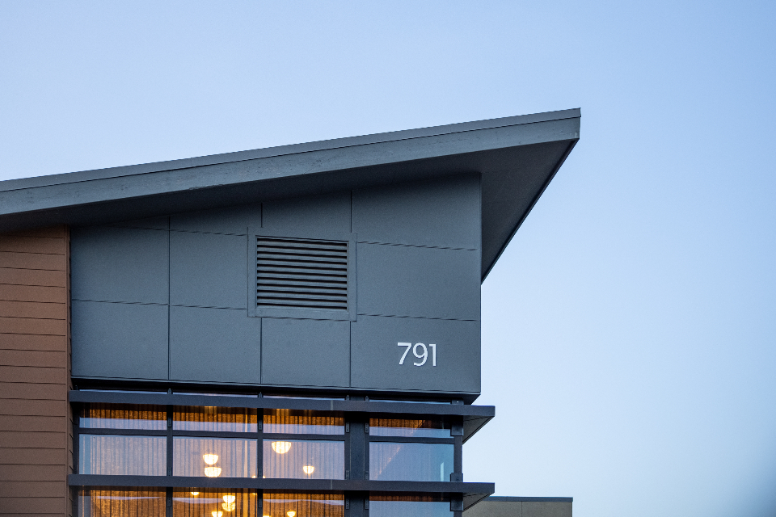
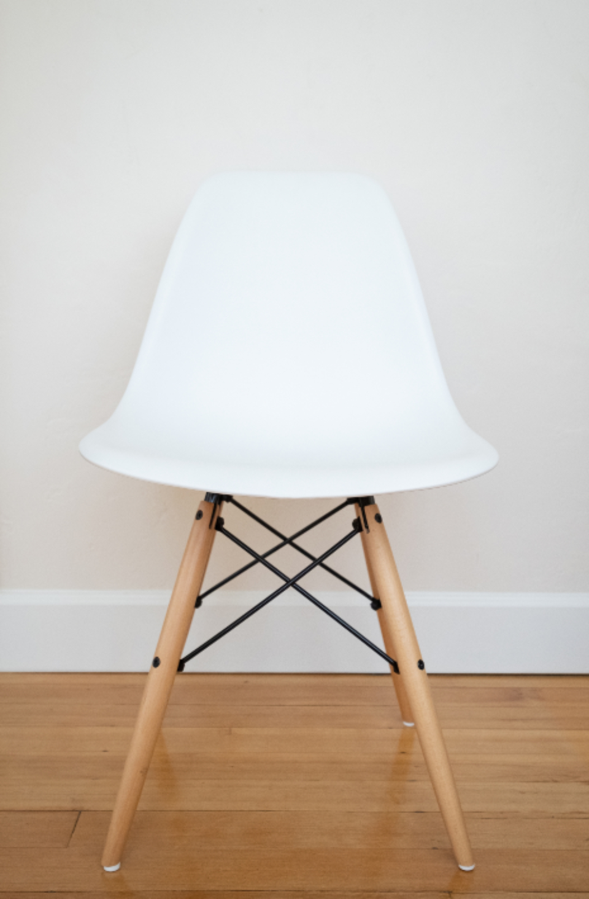

Design — ArchitectureWhat’s on your mind?
Find a story, explore an idea, or discover something unexpected.
A few stories to get you started

Culture — Objects & ritualsFind a story, explore an idea, or discover something unexpected.
A few stories to get you started

Design — Architecture
Culture — Objects & rituals